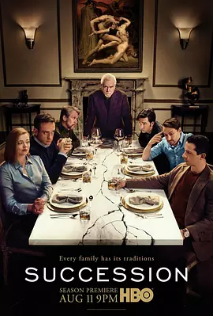

9.3
继承之战 第二季
Succession Season 2
2019
美国
评分 9.3
导演:
马克·梅罗德 / 安德里杰·帕瑞克
演员:
布莱恩·考克斯 / 杰瑞米·斯特朗 / 莎拉·斯努克 / 西娅姆·阿巴斯 / 尼可拉斯·博朗
类型:
剧情,家庭
剧情简介
新一季开场，四个被父亲牵制的孩子再次步入权力的战场。年迈的媒体帝国掌舵人 Logan Roy 看似退缩却始终掌握棋盘，在8月的第一个镜头里，他一边向家族示弱，一边暗中操控。Kendall 经过上一季的挫败后神情倦怠，却凭借一份关键文件重返父亲视野；Shiv 从幕后台前开始试探自己在帝国内的位置，嘲讽与野心并存；Roman 用嬉笑掩饰焦灼，试图寻找属于自己的角色；而Greg、Tom、Marcia 等棋子在这场家族较量中亦不甘默默无闻。 镜头切换于豪华游艇、远北冰岛、克罗地亚海岸，Roy 家族在公关危机、媒体收购、子女联盟与背叛之间游走。一次次董事会会议如同战场，餐桌争吵的旁边隐藏着欲望的暗流。第 5 集中，Roy 家族被迫赴 Long Island 的 Pierce 家族庄园交涉，权力与尊严在礼仪与晚宴中交错。 这一季深挖人物心理：Shiv 在婚姻、事业与家族间拉扯，Kendall 面对父亲既渴望认可又心生仇恨，Roman 在哥哥妹妹的阴影中寻找出路。Logan 则像一座活火山，沉稳却随时喷发。他不只是家长，更是操控者、审判者、游戏的设定者。此剧以黑色幽默贯穿——权力游戏惊心动魄，但在金碧辉煌背后，是信任的崩塌与亲情的裂痕。如果你喜欢看当代巨富家族内部的风云变幻，看权力如何在华丽之外腐蚀人心，这一季无疑在上一季的基础上升级。编剧 杰西·阿姆斯特朗 和导演团队将这一切拍得既宏大又细腻，让观众仿佛置身于玻璃幕墙后的权力沙场。